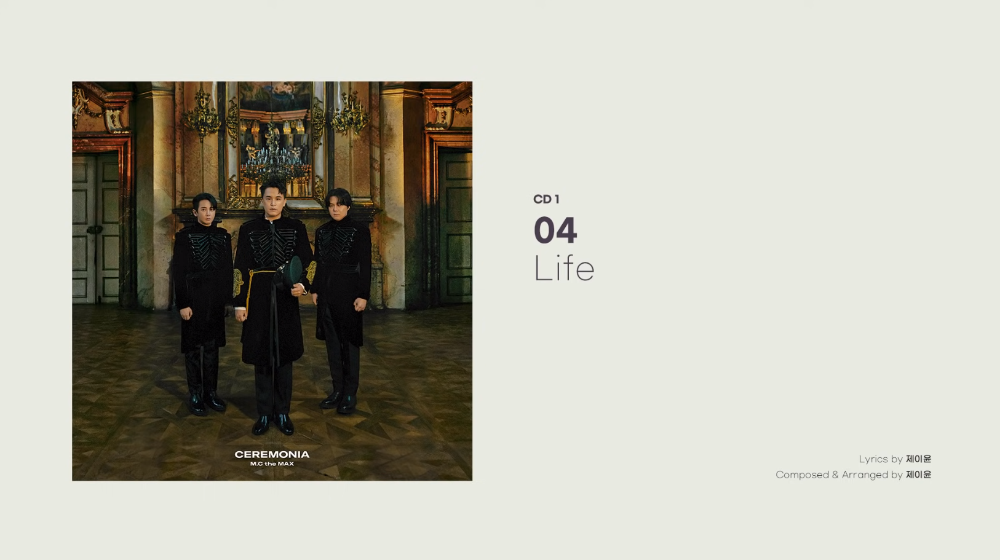

같은 팀의 이수의 곡이 심플한 구성과 전개, 듣는 사람을 한 번에 휘어잡는 것을 추구한다면 제이윤의 곡은 이수를 골로 보내려 하고 보다 풍부한 구성과 전개, 다양한 사운드, 흉악한 난이도의 사용을 추구한다고 볼 수 있다.
2021년 5월 13일, 신변이상이 있다는 신고를 받고 경찰이 출동했으나, 결국 서교동 자택에서 숨진 채 발견됐다.
2021년 6월 10일, 이수가 자신의 SNS에 다음과 같은 추모의 글을 남겼다.
너를 모두 알겠다가도 아무것도 모르겠어서 슬퍼진다. 이렇게 나는 너를 보낸다 윤. 아무걱정마 남은 사람은 어떻게든 살아진다.
그리고 그의 마지막 작품, Life
